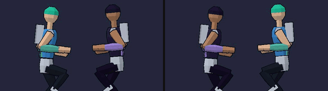
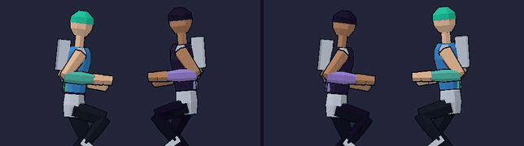
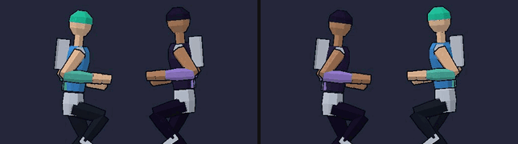
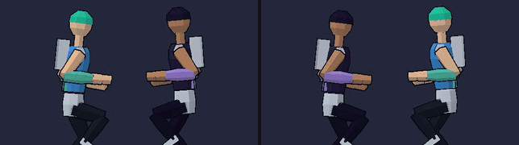
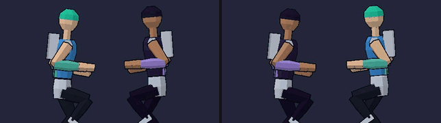
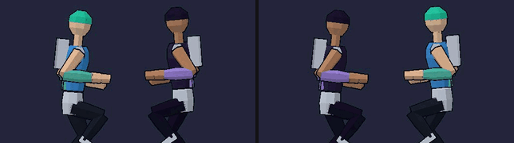
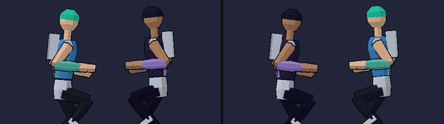
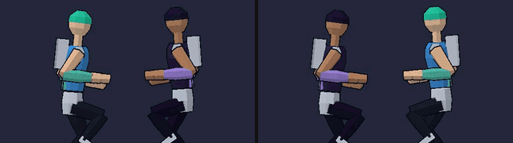
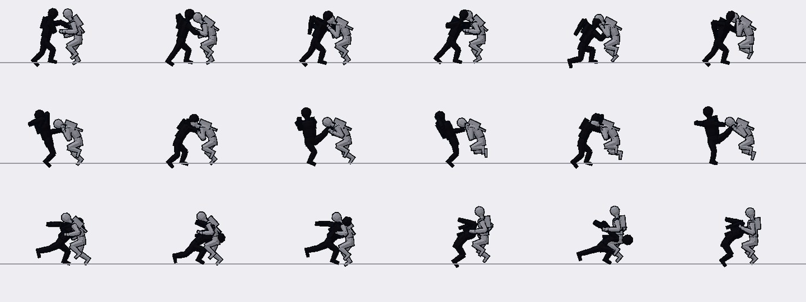

Flurry look study
View only, provisional, 2026-10-06. The real animation solver playing the three strengths on the two launch fighters (the Protagonist in blue, the rival in purple) against a dummy, captured from the web build in headless Chrome one tick at a time. Each clip plays at about half speed, the Protagonist on the left and the rival on the right. No hit sparks, ghosts or speed lines: those are VFX's, and are not in this study.
X light

X mash: a light about every 6 ticks, as today.

X held: a burst of eight, gaps 4, 4, 5, 6, 8, 11, 15 ticks (Combat's and Legal's), drawn from different pieces with the hands alternating; the closer the blows, the shorter each one, so it reads as quick jabs that grow as it slows, not as a stutter. This clip is near real time (about 0.8 of it). Frame strip, and its opening three blows tick by tick.


Y medium

Y mash: today's heavy pieces and looks, about every 14 ticks. Frame strip.


Y held: the wind-up keeps coiling for 40 ticks and the blow goes on release. Frame strip.

B super-heavy (provisional pieces)

B mash: a whole-body blow about every 28 ticks, the wind-up starting on the press. Two new, provisional pieces each, redrawn to Legal's screen (the Protagonist: a fall, one palm at the shoulder and the body coming down on it, and a full turn with a blade hand; the rival: a heave, a long low lunge with one fist drawn back at the shoulder, and a raised-leg heel drop). Frame strip.


The same B mash on today's heavy pieces at the super style: no new poses at all. Frame strip.


B held: the wind-up keeps coiling for 60 ticks and the blow goes on release. Frame strip.

For Legal

The three 28-tick gathers Legal asked to see (a double palm, a crossed-arm ram, a double hammer), Protagonist left and rival right. Frame strip. Also: the heave and the fall, wind-up and fall, and the burst's opening three blows.


The three strengths in silhouette, at fight distance

Rows: X light, Y medium, B super-heavy, each at its contact tick for the Protagonist (left three) and the rival (right three). The attacker is the dark shape. The camera is the fight-distance one.
Numbers and what is provisional: docs/animation/flurry-study.md. Every new move here is listed there for Legal's screen.